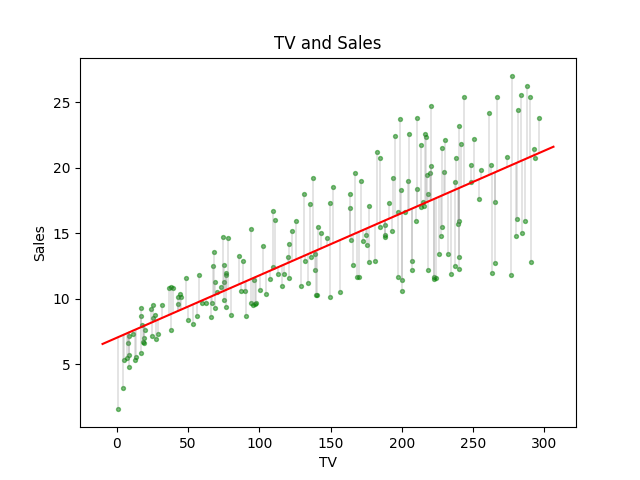
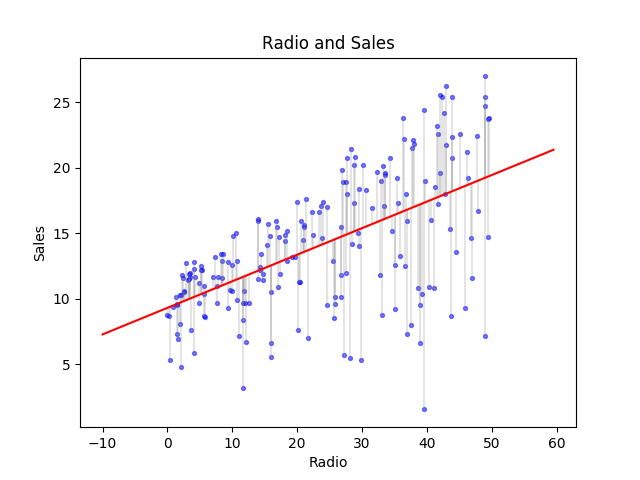
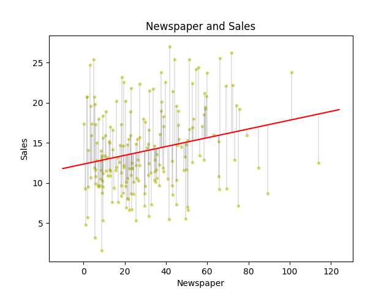

Estimating Multiple Linear Regress Coefficients
Keywords: multiple linear regress
Multiple Predoctors(Inputs)
Go back to our first example in ‘Simple Linear Regression’, we have three inputs(budget of TV, Radio, Newspaper) and an output (Sale):

The first trouble we come across is which model we would employ.
There are two spontaneous strategies:
- extending one input model to multiple inputs model
- making several models, each of which contains only one input and output.
The second stratigy is just repeating our discussion in ‘Simple Linear Regression’, and we can get the coefficients and relative statistics, like ‘t-statistic’ , ‘p-value’ e.t.c. According our knowledge, we can get(I copy the data from book ‘An introduction to statistical learning’[1]):
| TV-Sales | Estimate | Standard Error | t-statistic | p-value |
|---|---|---|---|---|

| Radio-Sales | Estimate | Standard Error | t-statistic | p-value |
|---|---|---|---|---|

| Newspaper-Sales | Estimate | Standard Error | t-statistic | p-value |
|---|---|---|---|---|

These three models contain information about the relationship of each combination, and they can be used to predict unknown ‘Sales’ by input separately. However, three models will produce three predictions, which prediction would be recorded as the final prediction is not sure. Average or other calculation of the three predictions could solve the problem, but there is no evidence that which kind of calculation could make a precise prediction.
Then a single model that contains all predictors was built, it was writen as:
The single input model we learnd before, is a specialty of equation(1) when . Such as:
In the multiple linear regression model, is the slope of , which means how much is effected when other hold and increase one unit.
Coefficients
How to calculate the each coefficient of the model is not contained in this article, and different methods to solve this could be found ‘Simple Linear Regression’. Though we do not investigate a certain algorithm, we assume we have got a correct result of the parameters by least square method whose object function is still :
where minimizes
Here we analytic the model because, up to now, we still don’t know whether every predictor is necessary for the model. In other words, we want to confirm every predictor contributes to the model.
Let’s go back to the ‘TV, Radio, Newspaper - Sales’ example.
and we got parameter:
We observe that in the table above and find is little wierd. Because its absolute value is much smaller than those of . Then we list all the statistics who assess accuracy of the parameter:
| Coefficient | SE | t-statistic | p-value | |
|---|---|---|---|---|
| (Intercept) | 2.939 | 0.3119 | 9.42 | |
| (TV) | 0.046 | 0.0014 | 32.81 | |
| (Radio) | 0.189 | 0.0086 | 21.89 | |
| (Newspaper) | -0.001 | 0.0059 | -0.18 |
‘p-value’ and ‘t-statistic’ of have changed a lot from ‘Newspaper v.s. Sales’ model. And those indicated that in the multiple linear regression predictors(inputs) affect each other. When we have only ‘Newspaper’ it works for predicting with parameter whose ‘t-statistic’ is large and ‘p-value’ is smalle. But the picture of the ‘Newspaper-Sales’ shows that the linear relationship between ‘Newspaper’ and ‘Sales’ is not very strong. This not strong relationship vanished in the multiple linear regression because the other two predictors dominate the relationship.
The multiple linear regression gives that ‘TV’ and ‘Radio’ are the essential factors for the prediction of ‘Sales’ while the single linear models did not.
But what happened to ‘Newspaper’? We supposed that there may be some connection between ‘Newspaper’ and ‘Radio’. For example, in a region radio attracted a lot of customers and these guys love reading newspapers coincidentally.
Another interesting example is that the number of shark attacks has a strong relation to the sale of ice-cream near the beach.
These three predictors and output have the Correlation Matrix:
this matrix presents a strong relation between ‘Radio’ and ‘Newspaper’.
Deciding on Important Variable
As we discussed above ‘newspaper’ is not an important variable for these problems. But what should we do to other problems who has a huge number of parameters to decide which some should be used in multiple linear regression.
A spontaneous strategy is we can test every combination. In the ‘Media-Sales’ example above, we could test the following combinations:
| No. | Combination |
|---|---|
| 1 | ‘TV’ |
| 2 | ‘Radion’ |
| 3 | ‘Newspaper’ |
| 4 | ‘TV’+‘Radion’ |
| 5 | ‘TV’+Newspaper’ |
| 6 | ‘Radion’+‘Newspaper’ |
| 7 | ‘TV’+‘Radion’+‘Newspaper’ |
| 8 | None of the predictors |
The No.8 combination represents that the output is just a random variable who has a mean 0 normal distribution.
The accuracy of every linear regression of that combination of predictors can be measured through many different kinds of statistics:
- Mallow’s
- Akaike information criterion(AIC)
- Bayesian information criterion(BIC)
- Adjusted
This strategy has a problem – dimension curse. Three inputs produced combinations. When we have only 10 predictors, we have to test 1024 times. In practice, more than 100 predictors are very normal and we can never test all their combinations.
What we need is a feasible method, and we have three different kinds of method:
- Forward Selection
- Backward Selection
- Mixed Selection
Forward Selection
Selecting variable one by one, each time we select the best among the rest until some conditions are reached. And we stop the greedy process. For instance, in the first iteration, we select from and then we take out one variable and combine it with and calculate a statistic who can measure the accuracy of the new two-variable linear regression. We select the best one out of the set and test if we could stop the iteration by some condition like a threshold or something else.
Backward Selection
It is inverse of forwarding selection. At first, it takes all the variables and then removes the least important variable one by one until some conditions are reached, too.
Mixed Selection
Mixed selection is a fixed method of forwarding selection and backward selection. When we add a new variable into the method, we test whether there are any variables can be removed for the new variable may contain the same information as the selected variables. For instance, the ‘Media-Sales’ example, we firstly selected the ‘TV’ variable then the ‘Newspaper’ for some reason, when we get ‘Radio’ data and the ‘Newspaper’ is no more necessary; so we remove the ‘Newspaper’ from the set of variables.
References
James, Gareth, Daniela Witten, Trevor Hastie, and Robert Tibshirani. An introduction to statistical learning. Vol. 112. New York: springer, 2013. ↩︎